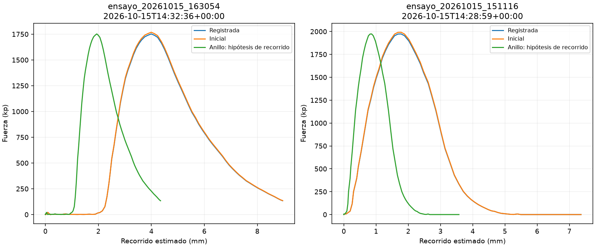

Comparación sobre los mismos voltajes y el mismo cero físico. Media por bloques de 10 lecturas, exclusión de fuerza negativa y recorrido estimado sin retrocesos en los tres casos. No se modifica la configuración activa ni los ensayos archivados.
| Ensayo | Calibración | Pico (kp) | Deformación en pico (mm) | Corregida por tangente (mm) |
|---|---|---|---|---|
| ensayo_20261015_163054 | Registrada | 1752.23 | 4.00 | 1.81 |
| ensayo_20261015_163054 | Inicial | 1768.54 | 4.00 | 1.81 |
| ensayo_20261015_163054 | Anillo: hipótesis de recorrido | 1752.23 | 1.94 | 0.87 |
| ensayo_20261015_151116 | Registrada | 1973.42 | 1.78 | 1.57 |
| ensayo_20261015_151116 | Inicial | 1991.80 | 1.78 | 1.57 |
| ensayo_20261015_151116 | Anillo: hipótesis de recorrido | 1973.42 | 0.86 | 0.76 |
Los factores iniciales son −1970,57 kp/V y 2,643095 mm/V, con offsets cero. El anillo guardado proporciona 1,282755921 mm/V: su intervalo de referencia de 1 mm se convertiría en 2,06048 mm con el factor actual. El usuario aclara que el anillo se deformó: este ajuste NO valida el recorrido de prensa ni la deformación de probeta. La columna del anillo es una hipótesis numérica, no una calibración aplicable del recorrido.

Los Excel siguientes contienen el escenario inicial ya calculado, lecturas brutas y gráfica editable: